The Scanner Workbench
The Workbench is where you build and send your transfer list. This page walks through every part of the screen, one region at a time.
Screen Layout
The Workbench has three regions, top to bottom.
- Entry bar — where you look up a part or a location. It changes depending on whether you are searching by part or by location.
- Current list — the table of lines you are working on. Each line is one transfer.
- Action bar — the buttons along the bottom for checking, sending, clearing, and exporting.
A coloured message strip can appear directly under the page title. Scanner uses it to report a problem without interrupting you — for example “Part number … was not found”. The message clears itself after a few seconds, or you can dismiss it with the ✕ on the right.

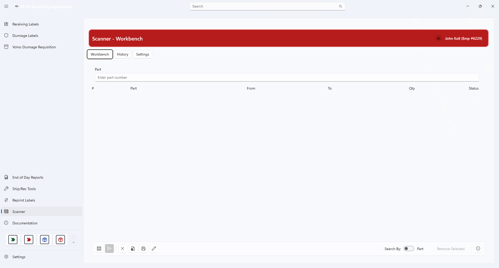
Entry bar (top) · current list (middle) · action bar (bottom)Search by Part
This is the default mode. Use it when you know the part number you want to move.
Make sure the toggle says “Part”
The Search By switch in the bottom-right corner should read Part. The text box is then labelled Part and reads Enter part number.
Scan or type the part number and press Enter
Scanner looks the part up in Infor Visual. If it is found, a window opens listing every stock location that holds the part, with the quantity on hand.
Choose the source location and quantity
Tick the location you are moving from. Adjust Qty if you are not moving everything, and set # Trans if the move should be split into several Infor Visual transactions. Choose Use Selected to add the line, or Cancel to back out.
Search by Location
Use this when you are standing at a shelf and want to see everything stored there. Instead of a part number, you type the location.
Flip the Search By toggle to “Location”
The text box relabels itself to Location and now reads Enter location. A second switch, Location range, appears to its left.

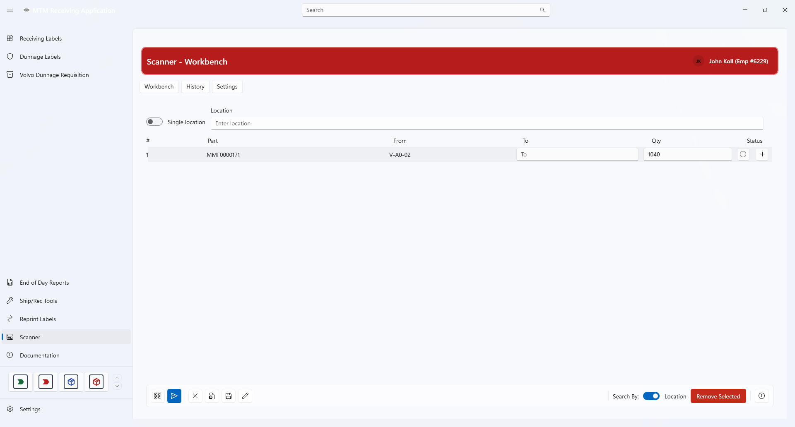
Location mode — “Single location” is the defaultType the location and press Enter
You do not need the exact spelling — Scanner rewrites what you type into the standard form (see About Locations).
Pick the parts you want to move
A window lists every part with stock at that location. It has a Select All button if you want the whole shelf in one go. Choose Use Selected to add the lines.
Location Range
A range loads parts from several locations in one pass — useful for a whole aisle or a block of shelves.
Switch Location range on
The single lookup box is replaced by two boxes: Start location and Stop location.

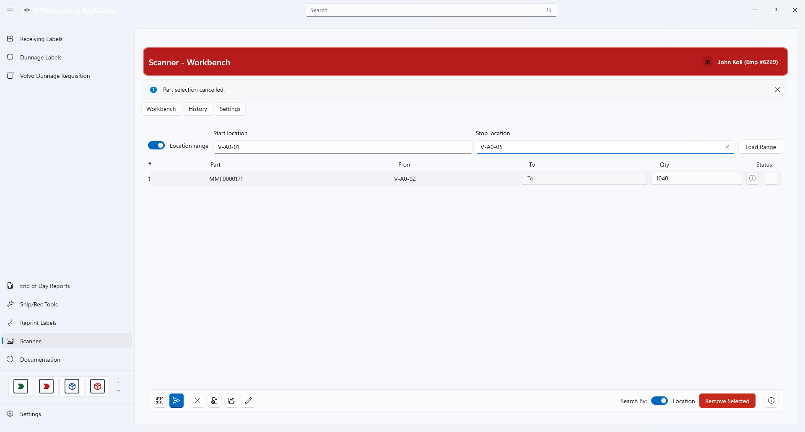
Start and Stop boxes, with the Load Range button on the rightType the range and press Enter — or press Load Range
Scanner tidies up both ends of the range automatically. If you type them the wrong way round, it swaps them for you.
Pick the parts from the grouped list
Every location in the range gets its own card, so you can see at a glance which shelf each part is on. Select All covers every card. Choose Use Selected when you are done.

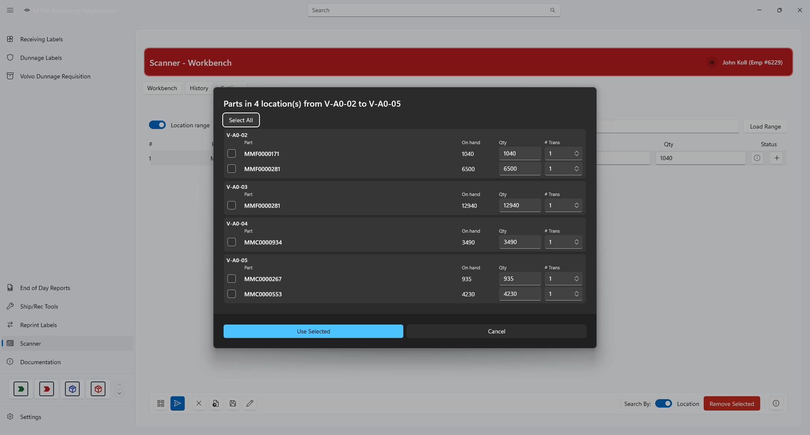
One card per location — tick the parts you want, then Use SelectedThe Current List
Everything you pick becomes a line in the table. The columns are:
| Column | What it holds |
|---|---|
| # | The line number. It renumbers itself when lines are added or removed. |
| Part | The part number being moved. |
| From | The source location the part came from. |
| To | The destination — you fill this in. |
| Qty | How many are moving. It starts at the on-hand amount from the picker. |
| Status | A coloured icon telling you whether the line is ready to send. |
 A new list — Scanner confirms how many lines were added
A new list — Scanner confirms how many lines were added
Line Status
The status icon is your checklist. A line is only sendable when it is green.
| Icon | Meaning | What to do |
|---|---|---|
| 🟢 | Ready! | Nothing — the line can be sent. |
| 🔴 | ! <reason> | Fix the reason shown: To location required, Qty less than 1, Qty too High, or From location required. |
| ⚪ | Enter destination | Type a To location. The line has not been checked yet. |
Click the status icon on any line to open a short explanation of exactly what that line is waiting for.

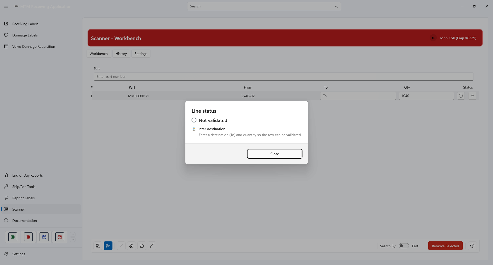
The Line status dialog — click any status icon to open itEditing a Line
Only To and Qty can be edited in the table. Part, From, and the line number come from the picker.
- Type the destination, then press Tab or click elsewhere — Scanner checks the line immediately.
- Quantity accepts decimal numbers only. No thousands separators.
- A quantity higher than the on-hand amount at the source location is rejected.
Moving between cells with the keyboard
- Tab — moves To → Qty → next line’s To → Qty, and so on.
- Enter — moves To → next line’s Qty, or Qty → next line’s To.
- After the last line, focus returns to the lookup box at the top, ready for your next scan.
Sending a Line
Sending happens one line at a time, and Scanner always asks you to confirm before it clears a line from your list.
Select a green line
Click the line. The blue button at the bottom becomes available.
Press the blue Send button
Scanner switches to Infor Visual and enters the transfer. While it works, the table is locked so a stray scan cannot change things mid-flight.
Answer “Was the transaction saved in Infor Visual?”
Back in the app you get a Yes / No prompt.
- Yes — the line is removed from your list and the next line is selected.
- No — the line stays exactly where it was so you can try again.
Infor Visual prompts that answer themselves
When a part has never been stored at a destination before, Infor Visual raises two extra windows — Inventory Transaction Entry and Add Part Location. While the Yes / No prompt is on screen, Scanner answers those two windows for you so the save is not left waiting.
Action Buttons
The buttons along the bottom of the Workbench, left to right:
| Button | What it does |
|---|---|
| Check all | Re-checks every line that is not already green, so the statuses are up to date. Nothing is sent. |
| Send (blue) | Sends the selected line to Infor Visual. |
| Clear list | Empties the current list. Use this when you are starting a new batch. |
| Open inventory | Brings Infor Visual forward and opens its Inventory Transfers window, so you can work in it directly. |
| Export | Writes the current list out to a file. |
| Manage items | Opens a window for editing the whole list at once — see below. |
| Search By | Switches between Part and Location lookup. |
| Remove Selected | Deletes the selected line from the list. |
| Help | Opens a short reminder of what this screen does. |
Manage items
Manage items opens the entire list in one window so you can add a blank line, duplicate a line, reorder lines with Move Up and Move Down, or delete lines. Nothing changes until you press Apply; Cancel leaves the list as it was.
Each line in the window shows the same values as the table, plus a Notes row:
| Field | Editable here? |
|---|---|
| Part | Yes |
| From WH | No — the warehouse is read-only |
| From Loc | Yes |
| To WH | No — the warehouse is read-only |
| To Loc | Yes |
| Qty | Yes |
| Status | No — shows Invalid or NotValidated |
| Notes | No — explains what the line still needs |

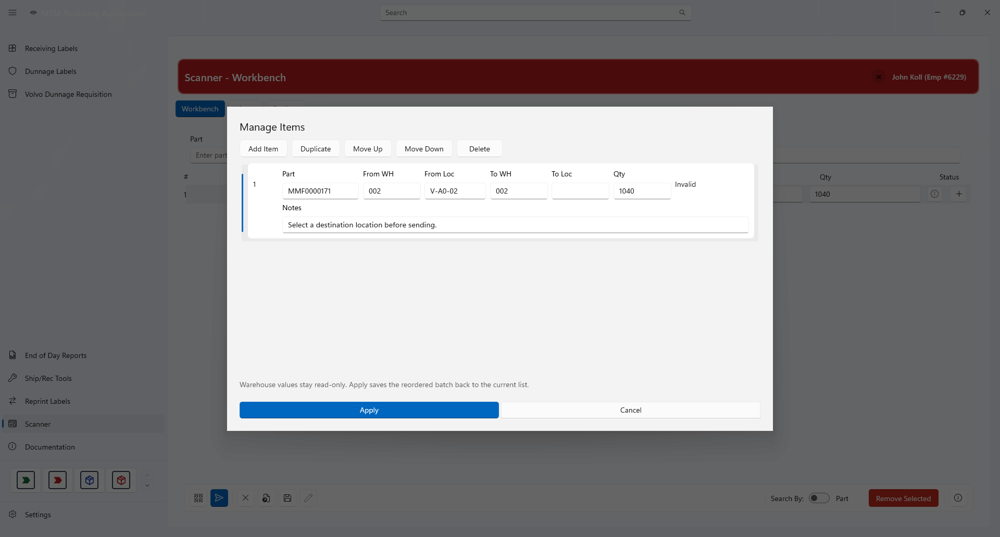
Manage items — reorder or fix several lines before sendingDialogs You May See
Scanner uses pop-up windows for the things it needs you to confirm or choose. Each one can be dismissed without saving anything unless you press its primary button. Problems with what you typed are reported differently — in the coloured message strip at the top of the screen, not in a pop-up.
| Dialog | When it appears | Buttons |
|---|---|---|
| Help | When you press the Help button. | Close |
| Part problem | Not a dialog. Appears in the message strip when a part number has no match, or exists but has no quantity in-house. | — |
| Stock locations for … | After a successful part lookup — lists every location holding that part. | Use Selected / Cancel |
| Parts at … | After a location lookup — lists every part held at that location. | Use Selected / Cancel |
| Parts in N location(s) … | After a location range load — one card per location. | Use Selected / Cancel |
| Add duplicate lines? | When the lines you picked are the same part from the same location as a line you already have. | Add Anyway / Cancel |
| Fix the issues before sending | When you press Send on a line that is not green. | OK |
| Line status | When you click a status icon on a line. | Close |
| Manage Items | When you press Manage items. | Apply / Cancel |
Help
A short reminder of what the Scanner module does. Nothing here changes your list.

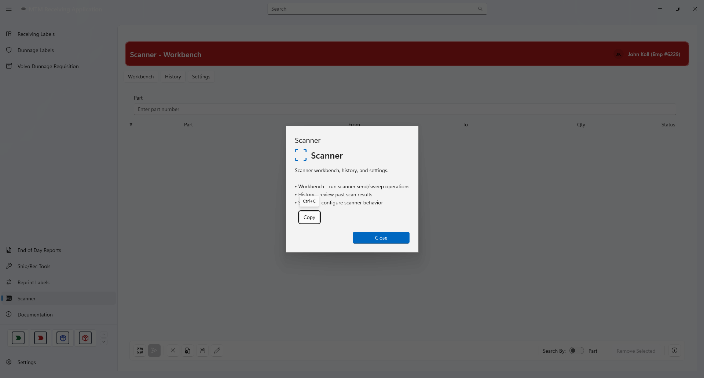
Help — press the ? button in the bottom-right corner to open itPart not found, or no stock
Scanner reports part problems in the coloured message strip under the page title, not in a pop-up window. You will see “Part number … was not found.” when the number does not exist in Infor Visual, or “The part number does not have any quantity in-house.” when the part exists but has no stock anywhere. The strip clears itself after a few seconds.

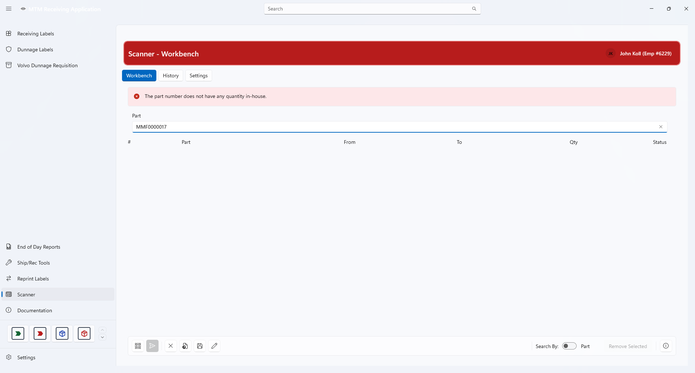
Part problems appear in the message strip and clear themselvesStock locations for a part
After a successful part lookup, this window lists every location that holds the part, with the quantity on hand. Tick the source location you are moving from, adjust Qty if needed, then choose Use Selected.

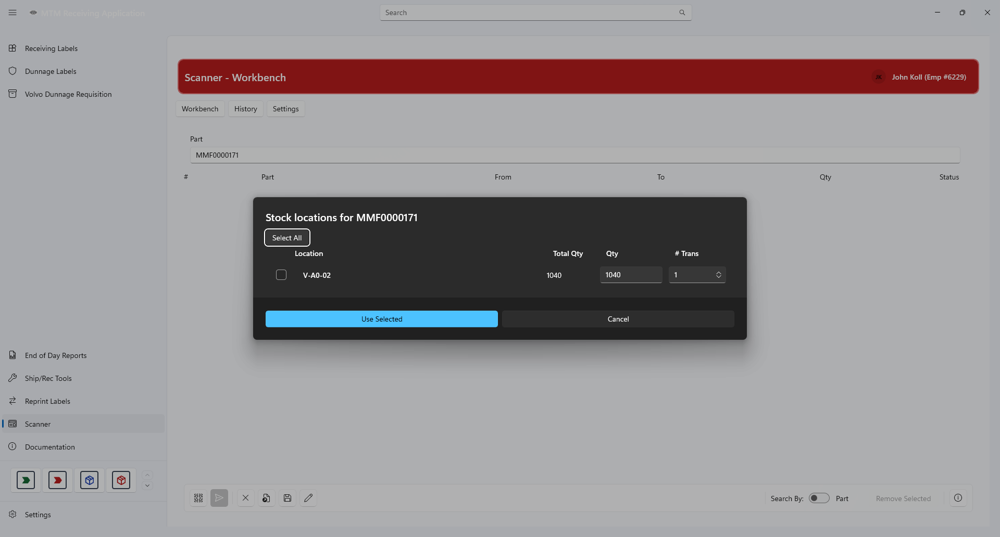
Stock locations — choose the source location and quantityParts at a location
The location-mode equivalent: every part currently held at the location you searched, with its quantity. Use Select All to take the whole shelf, then Use Selected.

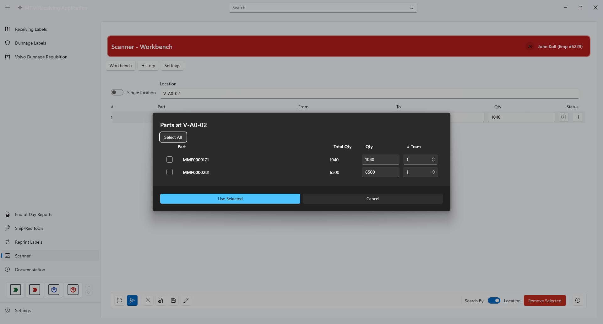
Parts at a location — one row per part, with Select All availableAdd duplicate lines?
Scanner spots when the lines you picked repeat a part and source location you already have. Choose Add Anyway only if you really do want two identical lines; otherwise choose Cancel.

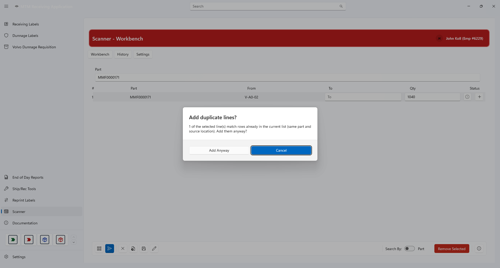
Duplicate warning — only add the lines again if you mean toFix the issues before sending
Pressing Send on a line that is not green does not send anything. Instead Scanner explains exactly what the line is missing.

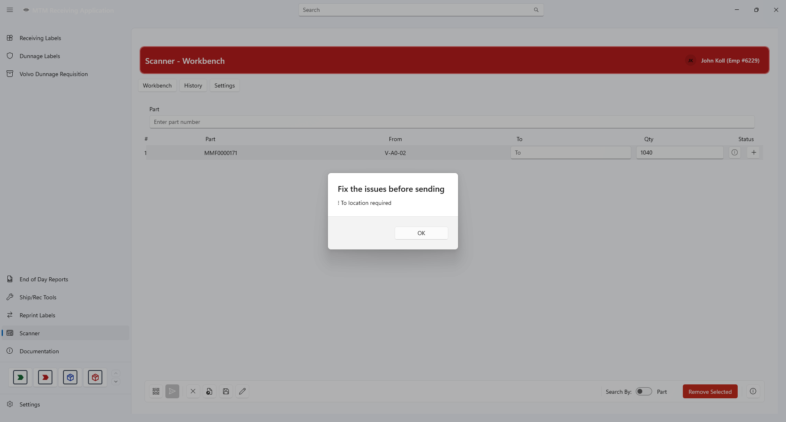
Sending an unfinished line explains what is missing